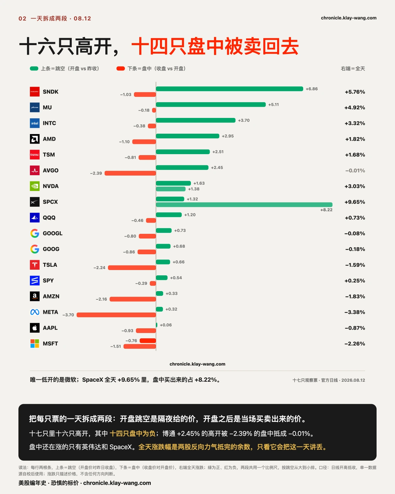
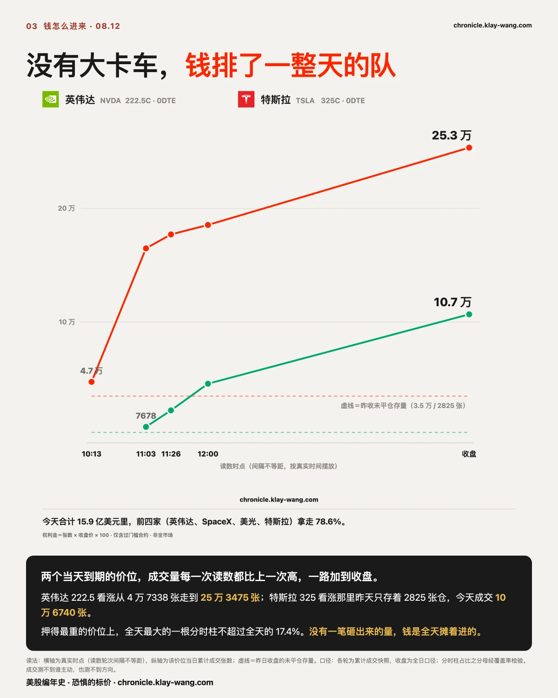
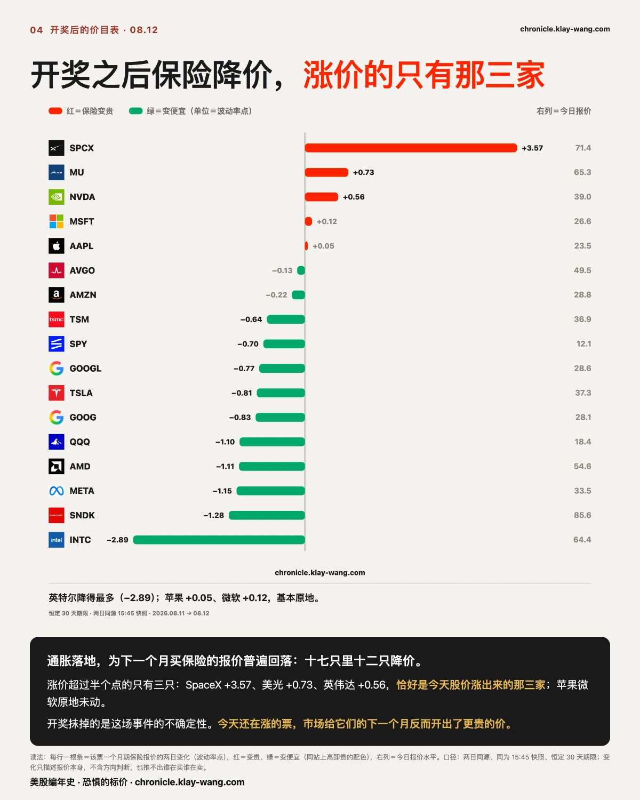
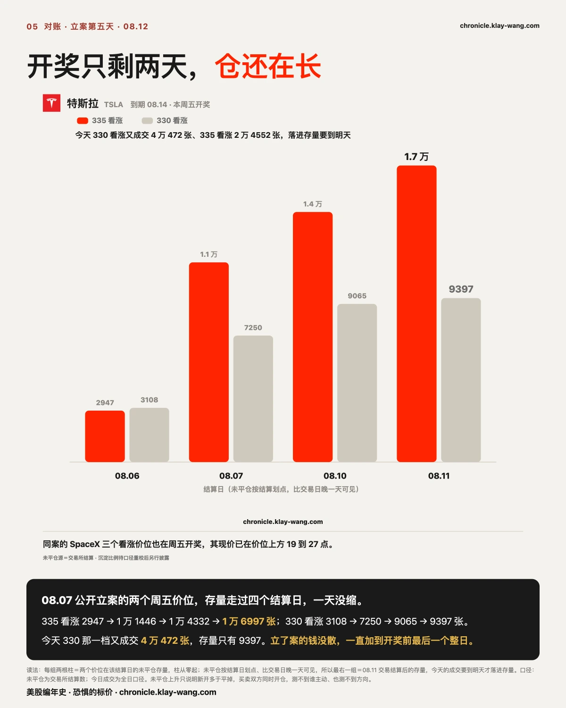
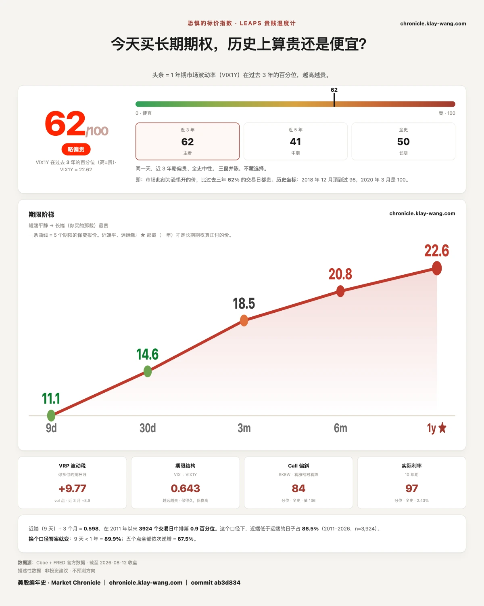

13 亿美元，居然90% 都活不过三天？ · 8.10-8.14
⚡ 三行速览
- 通胀数据四个数与预期逐项一致；标普全天没碰到事前画好的 0.78% 围栏，纳指盘中探头 0.181 点又收了回来。
- 十七只观察票里十六只高开，其中十四只盘中被卖回去；今天被标记的期权钱 15.9 亿美元，前四家公司拿走 78.6%。
- 昨天凭空长出来的六个价位，五个今天到期，到期时五个都还值钱；而昨天押得最重的那一注，到期归零。
这一期讲什么
第 1 节看开奖本身：事前画的围栏和实际走出来的路。第 2 节把十七只票的一天拆成两段，看一个被全天涨跌幅抹掉的形状。
第 3 节看今天的钱是怎么进场的。第 4 节看开奖之后，保险的价目表怎么重新开。
第 5 节回头对账，昨天公开记下的账，今天逐件对，包括我们自己没做好的那部分。第 6 节是每天的温度计。
不着急的话，读完第 1 节和最后一节，今天这个市场大概是什么样，就有数了。

〔大盘 · 开奖〕数字一个字不差，围栏没有被碰到
这一节只讲一件事：开奖之前市场给今天定了多大的颠簸，今天实际颠了多少。不评数据好坏，也不讲该怎么办。
早上 08.30，七月通胀数据落地：同比 3.4%，核心 2.5%，环比 0.1%，核心环比 0.2%，
四个数与市场预期逐项一致，同比还是 3 月以来最小的增幅。
开奖之前，期权市场给今天的标普 500 画过一道围栏：上下各 0.78%。这道栏不是谁的观点，
是真金白银的报价拼出来的，有人买保险，有人卖保险，价格落在哪，栏就画在哪。
结果是：标普全天最高 +0.56%，最低 +0.09%，收盘 +0.25%，从头到尾没碰到栏。
纳指 100 那边更有意思：围栏上下各 1.20%，盘中最高冲到 +1.22%，把头探出栏外 0.181 点，
收盘回到 +0.73%，还是在栏内。
打个比方。搬家公司提前告诉你，这趟路最多颠 0.78%。跑完一趟，实际只颠了 0.25%。
你不用懂路况也能读出一件事：事前开价的人，今天没有被路面吓到。
口径说清：围栏是昨天收盘后的期权报价换算出来的隐含区间，锚在昨天的收盘价上；今天的高低收用官方日线。
三件套：依据是事前的隐含区间与当日的高低收；推理是事件日的实际走幅落在事前定价之内，
说明这场开奖被市场提前标对了价；可推翻条件是明天生产者价格落地时同样的围栏被冲破，
那这次就只是碰对，不是标对。

〔横截面 · 十七只〕十六只高开，十四只盘中被卖回去
这一节不讲哪只票好，只讲一个当天的形状：开盘那一下和开盘之后，是两笔不同的账。
一只票的全天涨跌，其实是两段拼起来的。开盘跳空那一段，是隔夜和盘前挂出来的价；
开盘之后那一段，是当天一笔一笔真实买卖出来的价。 把这两段拆开看，今天比表面上激烈得多。
十七只观察票里，十六只高开，唯一低开的是微软。而高开的十六只里，十四只从开盘一路卖到收盘。
最典型的是博通：全天 −0.01%，看起来是全场最平静的一只。拆开完全不是这么回事：
夜里被抬高 2.45%，白天被卖掉 2.39%，两股方向相反的力气，最后在账面上抵成了一个零。
说它“基本持平”，等于把这一天全讲丢了。闪迪是同一个样子：全天 +5.76%，其中 +6.86% 是开盘前给的，
开盘之后反而是跌的。
反过来的只有两只。英伟达两段都在涨。SpaceX 更彻底：全天 +9.65% 里跳空只占 1.32%，
主体 +8.22% 是盘中一路买出来的，全天真实振幅 11.70%。
这种形状为什么会反复出现？说白了是三条路，通常一起起作用。第一条，定价的人不同：
跳空是隔夜和盘前那个人少单薄的时段定出来的，更像一个声明，不是一场交易；开盘之后全场的钱才进来投票。
第二条，高开本身就是出口：拿着大仓位想减的人最缺接盘的流动性，高开等于电梯先开到了高层，
想下车的人自然在这里下。第三条，有一批不带观点的参与者也在卖：做市商对冲自己的期权库存时，
会机械地把冲高卖回来、把回落买回来，今天大多数观察票都处在这种机制生效的区域里，
这股力量不读新闻，只把价格往中间压。三条路通向同一句话：隔夜标出来的价，要白天真金白银认账才算数。
三件套：依据是十七只的前收、开盘与收盘价的两段拆分；推理是十六只同向高开说明隔夜的定价方向一致，
十四只盘中回落说明当场的交易在往回走，全天涨跌幅把这两股相反的力气抵掉了；
可推翻条件是明天同样的拆分下盘中那一段普遍转正，那今天的回落就只是开奖日当天的形状，不是延续的形状。

〔个股 · 钱怎么进来〕没有一辆大卡车，全是排队的小推车
这一节讲今天被标记的期权钱的进场方式。不讲方向，方向测不到。
今天被标记的期权钱合计 15.9 亿美元，比昨天多两成半。前四名（英伟达 3.63 亿、SpaceX 3.38 亿、
美光 2.88 亿、特斯拉 2.62 亿）合计拿走 78.6%。昨天九成的钱挤在最近两天；
今天最重的一天换成了周五，占 54.8%。
进场的方式比总量更值得看。英伟达那个当天到期的 222.5 看涨价位，早上十点一刻成交 4 万 7338 张，
午前 16 万，午后 18 万，收盘 25 万 3475 张，每看一眼都比上一眼多。特斯拉 325 看涨同样：
昨天收盘那里只存着 2825 张仓，今天从 7678 张一路走到 10 万 6740 张。
而且这些量不是一笔砸出来的。押得最重的几个价位上，全天最大的一根分时成交柱，
占全天的比例都没超过 17.4%（口径：分母经覆盖率检验）。
打个比方：仓库一天进了一整车队的货，但门口的监控里从头到尾没出现过大卡车。
全是小推车，排了一整天的队。
要说清楚的是：成交只说明有人换手，买卖双方同时成交，测不到谁主动，也测不到方向。
这两个价位当天到期，收盘时一个停在价位上方 1.59，一个停在上方 2.51，结算就按这个位置来。

〔横截面 · 开奖后的价目表〕保险集体降价，涨价的只有那三家
这一节回到十七只的横截面，看开奖之后，为下一个月买保险的报价怎么重新开。
一场所有人都在等的开奖结束后，保险降价是常态：悬着的事落了地，保下一个月的报价就该便宜一点。
今天也确实如此：十七只里十二只降价，英特尔降得最多。
有意思的是另一边。涨价超过半个点的只有三只：SpaceX、美光、英伟达，
恰好就是第 2 节里今天股价涨出来的那三家。 苹果和微软基本原地没动。
打个比方。台风过境，全城的保险第二天都降价了，只有今天还在涨水的那三条街，保费反而被调高了。
口径说清：两天用的是同一来源、同一时点（下午三点三刻）的快照，量的是恒定三十天期限的报价；
涨跌只描述报价本身，推不出方向，也推不出谁在买谁在卖。
三件套：依据是十七只同源两日的一个月期报价；推理是事件落地后报价回落是常态，
逆着常态涨价的三只与当天股价上涨的三只完全重合，这个重合就是今天的形状；
可推翻条件是明天这三只的报价跟随大市回落，那今天的涨价就只是当天交易拥挤的痕迹，不是重新定价。

〔对账 · 昨天立的字据〕五个凭空的仓都值钱了，最重的一注归零
这一节是回头对账。昨天这一版公开记了三件事：六个凭空长出来的价位、押得最重的一注、
和押给周五的两个立案价位。今天逐件对，最后再晒一件我们自己没做好的。
第一件。昨天那六个几乎从零长出来的价位（前一天合计只有 598 张仓，昨天一天成交 8 万 4325 张），
五个今天到期。开奖结果：五个全部收在自己能结算出价值的那一侧。
Meta 那两个价位，收盘价在价位下方 28.65 和 31.15；特斯拉那两个，差 9.99 和 7.49；
AMD 那个看涨价位，收盘高出它 15.43。第六个是博通 08.24 到期的，还没开奖。
先把丑话说在前面：值钱不等于赚钱。 到期值多少，要和当时付出去的价比，各家买价不同，我们不测。
它只回答昨天挂的那个问题：那批当天运进空摊位的货，到收摊那一刻，不是废纸。
第二件。同一批钱里押得最重的那一注（特斯拉 335 看涨，昨天一天成交 13.4 万张）。
今天盘中最高 335.27，一度把头探过了 335 那道门，收盘 327.51，到期归零。
同一天立的注，有的结出钱来，有的差 7.49 变成零。这两行放在一起才是全貌，我们不挑好看的那半张。
第三件。押给周五的两个立案价位（特斯拉 330 和 335 看涨），存量走到了第四个结算日：
335 看涨 2947 → 1 万 1446 → 1 万 4332 → 1 万 6997 张；330 看涨 3108 → 7250 → 9065 → 9397 张。
今天 330 那一档又成交 4 万 472 张。仓一直长到开奖前最后一个整日。周五收盘，正式开奖。
顺带三行小账：
- SpaceX 立案那批价位也是周五到期。它今天收 146.15，三个看涨价位已经全部深入值钱的一侧 19 到 27 点，
最终存量周五结算见。顺带一个数：同案那张 119 看跌，存量从立案时的 391 张走到 2547 张（三个交易日的累计净变化）。 - SpaceX 保一个月仍贵过保一年：昨天差 1.50 个点，今天拉到 2.35 个点（两天同为 15:45 口径）。
十七只里仍然只有它和博通是这个倒挂形状。 - 沉淀率那组百分比，本期继续不发：核对中发现分母口径要再校一遍，数字站稳之前，宁可欠着。
未平仓的绝对变化不受影响，上面那两行就是。
最后一件，晒我们自己。这两个立案当初还挂着一个要验证的问题：那批钱是新开的仓，还是老仓换手。
今天这项验证在台账上正式记为“无法判定”，两案原因不同。特斯拉那两档：
实测值落在我们当初写的判据没有覆盖的区间里（规则只写了高于某线算对、低于某线算错，中间那段没写），
判据是我们自己写坏的。SpaceX 那批：验证要用的四个底数当时没有存进档案，现在永久取不回来了。
规则写漏了就是写漏了，档案没存就是没存，两条都记在公开台账上；下次立案，先把判据写完整，先把底数存好。
未平仓上升只说明新开的仓多于平掉的仓，买卖双方同时开仓，测不到谁主动、也测不到方向。

〔大盘 · 恐惧的标价〕昨天刚停住，今天接着降
这一节不涉及任何一只票，只看整个市场为未来一年的不确定性付多少钱。
先说这个数是什么。市场上有一批人必须每天给“未来会不会剧烈波动”开价，开错了要自己赔钱。
这个指数量的就是他们给未来一年开的价，在过去三年里排第几。
2026.08.12 的读数是 62 分（满分 100）。
昨天我们写：连涨两天之后它停住了，只动了 0.4 分，接下来是接着降还是重新往上。
今天给了答案：接着降，而且一天走了 3.6 分，从 65.5 到 61.9，比前两天加起来动得都多。
开奖落地，一年期的报价从 22.75 降到 22.62。
同一时点，五个期限的报价依旧排成一条上坡：9 天 11.09，3 个月 18.53，6 个月 20.82，1 年 22.62。
越远越高，这是常态。降得最多的是 9 天那一档，从 12.52 掉到 11.09，眼前这场事考完了，
最近的保险最先降价。
关你什么事： 这个数字不是给买保护的人看的，是给卖保护的人开的价。
它不告诉你明天涨还是跌，它告诉你：那批必须为未来一年报价、并且报错了要赔钱的人，今天报了多少。
恐惧的标价指数（Fear-Price Index）· 2026-08-12 · 读数 62/100：一年期波动率 VIX1Y 为 22.62，处于近三年第 62 百分位，高即贵。逐日台账与口径 → chronicle.klay-wang.com · 转载注明：恐惧的标价指数 · Market Chronicle
今天值得带走的三句话
- 全天涨跌幅是两段抵完的余数。 跳空是隔夜标出来的价，盘中是白天用钱投出来的价；
看自己手里的票，先把这两段拆开，你才知道今天的价格是谁定的。 - 大事件有多可怕，市场事前就标好了价。 今天那道栏是 0.78%。下次看到吓人的标题，
先去看栏在哪，事后回来核它兜没兜住。这把尺子免费，而且天天能验。 - 开奖之后保险普遍降价是常态。 逆着降价潮涨价的票，市场认为它的事还没完。
最后预告一件今天盘后看到的事。两个秋天的到期日上，同时出现了一批排得异常整齐的看跌合约：
三个价位、量成 1 比 2 比 1，两个到期日加起来约 60 万张，而前一天那些价位上的存量加起来不到 3000 张。
这批量今晚还只有单边读数，要等明天的结算存量来验真。数字站住了，明天这一期把它摆开细讲。
除此之外，下一期回来对四件：周五收盘，特斯拉 330/335 和 SpaceX 那批立案价位的最终存量，两案正式收卷；
押给周五的那 54.8% 的钱，是重演今天的形状还是反过来；明天生产者价格落地，同样的围栏还兜不兜得住；
长端这一步 3.6 分之后，是继续降还是停。
本站不提供投资建议，不预测方向，不做择时。